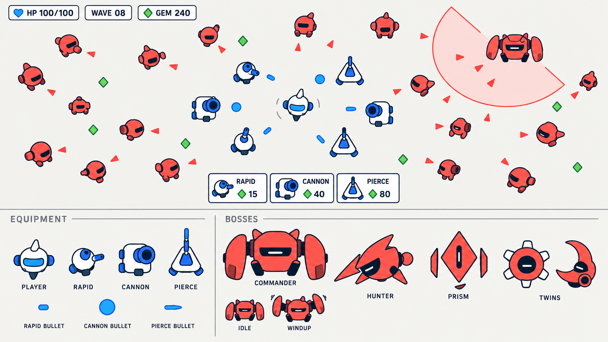
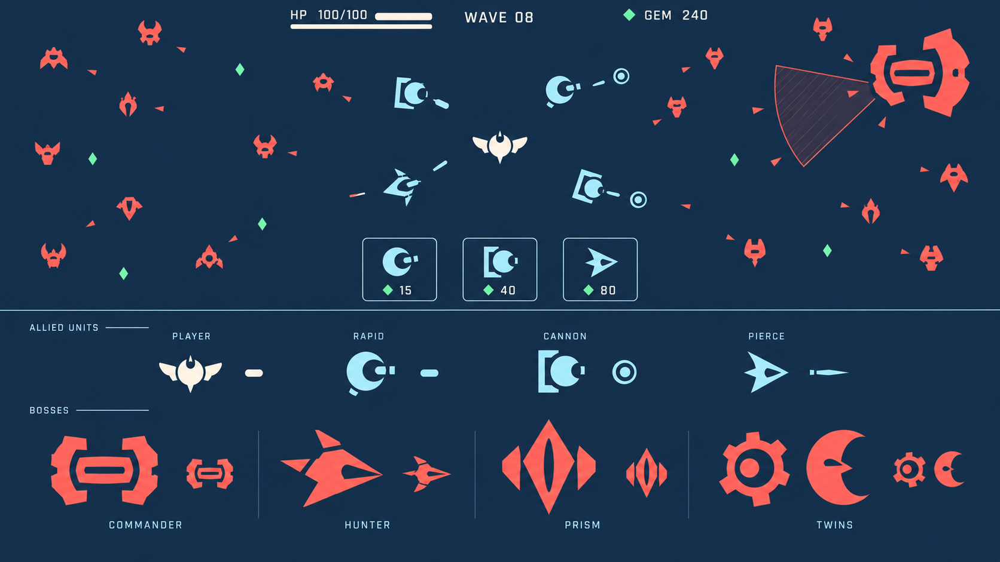
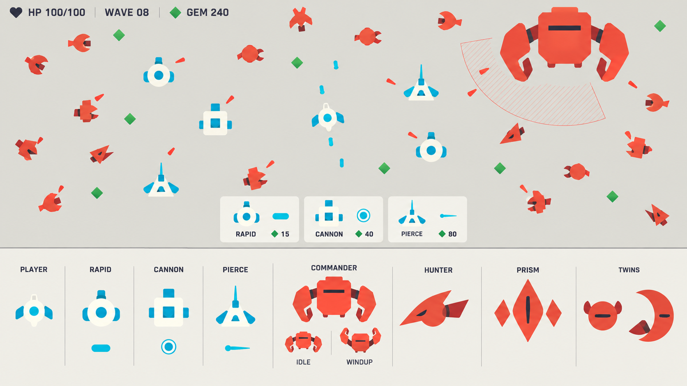
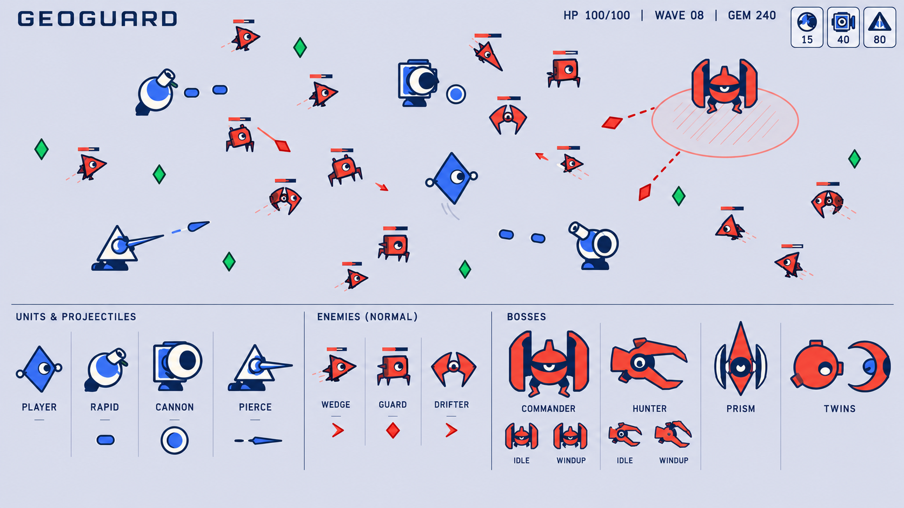

第三轮：让角色有自己的形体、器官与动作性格，同时保持矢量平涂与留白。参考小主体配夸张主器官的造型思路，为 GeoGuard 独立设计机械、面具、小兽和器械四套词汇。

圆钝机械、宽传感器和夸张炮口。重视角色亲和力，修订为更简洁平涂。

用括号、缺口和大负形表达身份与情绪。最接近“极简但有自己的造型”。

一块身形加粗短肢体，长喙、夹臂和镜翼表达行为；司令的蓄力姿态可发展为动作语言。

偏心关节、夸张夹口和大传感孔，强调会压缩、张合、弹出的机械性格。
查看评估、参考来源与落地建议